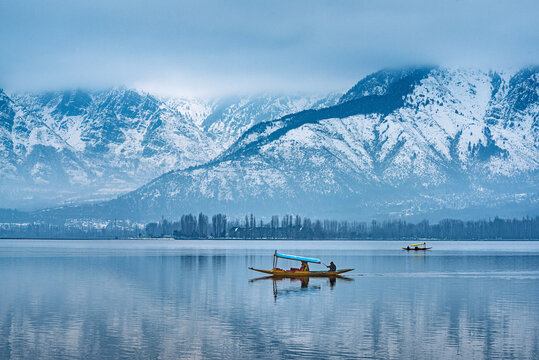

KASMIR
Kashmir, often referred to as "Paradise on Earth", is one of the most scenic destinations in India, nestled in the lap of the Himalayas. With its snow-covered mountains, alpine meadows, serene lakes, and blooming gardens, Kashmir is a dream come true for nature lovers and peace seekers.The region is not just about natural beauty—it's rich in culture, tradition, and warm hospitality. Whether you're gliding through the Dal Lake on a shikara, strolling in the Mughal Gardens, or skiing in Gulmarg, Kashmir promises unforgettable experiences.
Highlights:
Kashmir is renowned for Dal Lake, where you can glide on traditional Shikaras, stay in charming houseboats, and witness floating markets. Gulmarg is a year-round destination offering skiing in winter and lush meadows in summer, along with the famous Gulmarg Gondola ride – one of the highest cable cars in the world. In Pahalgam, scenic views, pine forests, and river valleys like Betaab and Aru invite you to enjoy trekking, horse riding, and peaceful riverside walks.
🧳 Sample Travel Packages to the KASHMIR
1.Romantic Kashmir (Honeymoon Special)
Duration: 6 Days / 5 Nights
Destinations: Srinagar – Gulmarg – Pahalgam – Sonmarg
Includes:
1 night in a luxury houseboat on Dal Lake
Shikara ride + Candlelight dinner
Gulmarg Gondola ride
Daily breakfast and dinner
Private cab and sightseeing tours
Estimated Cost: ₹35,000 – ₹50,000 per couple
2.Kashmir Scenic Splendor
Duration: 7 Days / 6 Nights
Destinations: Srinagar – Sonmarg – Gulmarg – Pahalgam
Includes:
3-star or 4-star accommodations
Sightseeing to Betaab Valley, Aru Valley, and Thajiwas Glacier
Gondola ride + Local guided tours
All transportation with driver
Estimated Cost: ₹30,000 – ₹45,000 per person
3. Budget Backpacker Kashmir
Duration: 5 Days / 4 Nights
Destinations: Srinagar – Gulmarg – Pahalgam
Includes:
Budget hotels or homestays
Local bus/tempo traveler options
Dal Lake shikara ride
Shared day tours
Estimated Cost: ₹15,000 – ₹22,000 per person